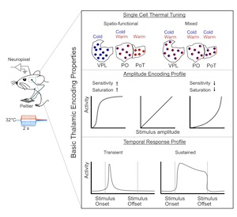
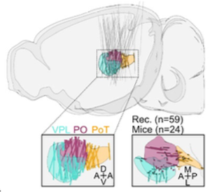
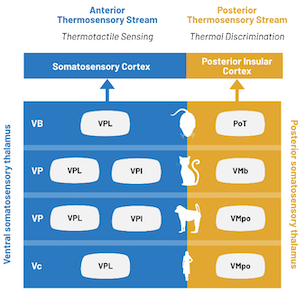
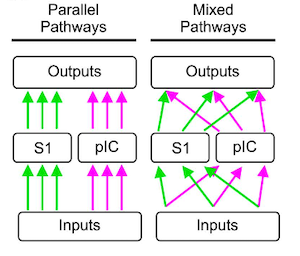
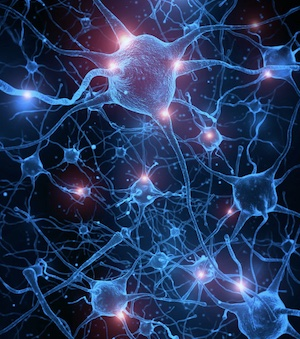
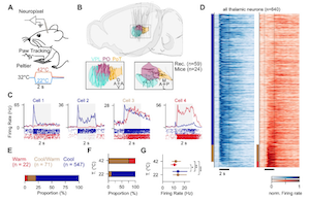
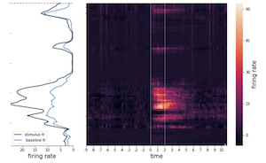
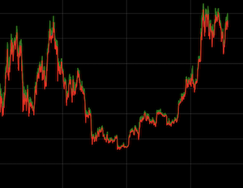

I am a systems neuroscientist with 5+ years of hands-on experience in high- density extracellular recordings (Neuropixels, Imec), in code development of signal processing models and applying machine learning and statistical techniques to high-dimensional neural data, as demonstrated by my scientific work and certifications in data science and neural networks. I possess extensive expertise in planning and conducting innovative neuroscience research, data analysis, and visualization, as well as in preparing scientific manuscripts. This is demonstrated by two peer-reviewed publications and one preprint resulting from my doctoral work. My professional approach emphasizes the translation and transfer of scientific knowledge through collaboration, training, and effective communication, as demonstrated through various teaching roles and mentorship responsibilities.
Magna cum laude
Grade: 1.1


Leva TM, Whitmire CJ. (2024) preprint version
Download
Leva TM, Whitmire CJ. (2023) Frontiers in Neuroscience
Download
Bokiniec P, Whitmire CJ, Leva TM, Poulet JFA. (2023) Cerebral Cortex
Download
Code to control electrophysiological recording rig for high-density extracellular probes (Neuropixel, IMEC) and somatosensory stimulation. Detailed Information can be found on Github, follow the link....
View Project
Code for Analysis of Fig 1 and 2 of https://doi.org/10.1101/2024.02.13.580167
....tbc


Project that developed different models (Random Forest, LSTM - Neural Networks) to forecast the next day's Bitcoin price movement (rise or fall) by incorporating data from gold, oil, S&P 500, and market sentiment.
View ProjectPassionate about creating interior designs and custom furniture. Follow the links to the individual project for Rhino7 files and some impressions of the projects
View Kitchen View "The SoundSchwein"